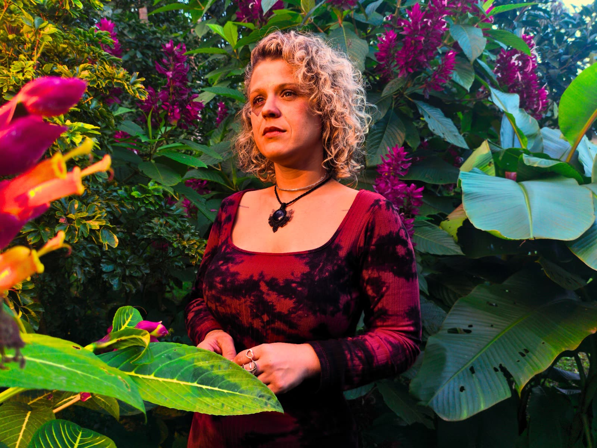
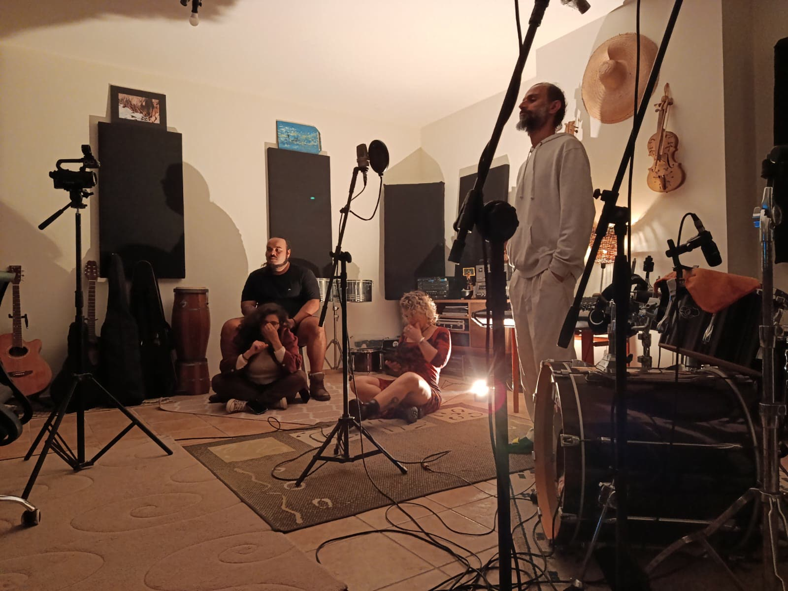

Pegadasna Trilha
EP · 4 canções · 2026Olhe dentro
da pedra.
Gravação ao vivoEm roda,
em volta de um microfone.
Estúdio Fernando LoboTodo mundo na mesma sala,
cantando junto.
Direção musicalEugênio Fim.
Ouça.
Leve com você.
Cante junto.
Folheie as canções. Mude o tom, esconda as cifras, toque numa linha para ouvir daquele ponto ou imprima a cifra.
Arraste a página, toque nas bordas ou use as setas do teclado.

Di Garrocini
Cantora e compositora paranaense, vive e respira a música autoral. É mãe, musicista e médica veterinária. Nascida no interior do Paraná, mora em Pontal do Paraná há mais de cinco anos e encontrou no litoral o cenário que impulsiona sua criatividade.
Pegadas na Trilha é o reflexo de sua jornada pessoal e musical: cada canção revela as emoções, os sonhos e as experiências que ela transforma em música e poesia.
Tarja Verde
Quem acompanha a Di no palco: a banda Tarja Verde, com Ricardo Vella na bateria e Eugênio Fim, que assina a direção musical do disco.
O EP foi gravado ao vivo no Estúdio Fernando Lobo.
